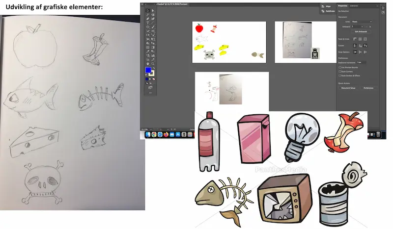
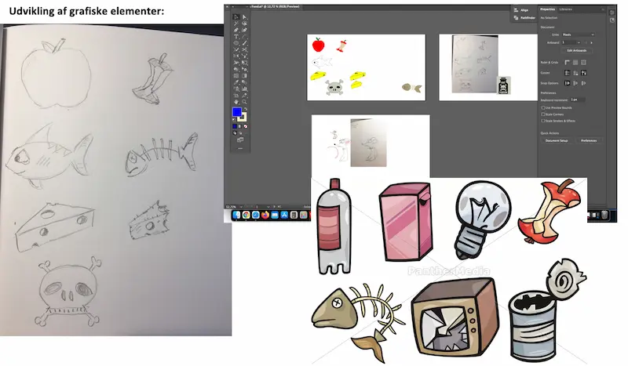

Animation
Grundlaget for dette tema var at den enkelte studerende skulle designe sit eget lavpraktiske spil. Alle grafiske elementer blev designet for bunden, og til spillets bassale funktioner blev javascript introduceret. Temaet endte ud i et selvprodceret interaktivt spil med tilhørende hjemmeside til at dokumentere processen.
Opgavens hovedpunkter
- Udvikle grafik, vælge genre, fotostil m.m
- Udtænke koncpet/ide
- Lave Aktivitetsdiagram
- Lave stat-machine diagram
- Lave hjemmeside
- Løbende opdatere spillet med nye funktioner
Proces
Mit spil (Falling Food) byggede på et koncpet hvor mad og gift falder ned til en mus. Spilleren spiller som den sutlne mus der hurtigt skal finde ud af hvilket noget mad der skal spises. Jeg tog udganspunkt i en simpel 2d stil. Karakteren skulle fremstå asymmetrisk og så uskyldig som mulig. Næste trin var at tænke over konflikt og historien.
I de næste faser blev stilen til de forskellige skærme fastlagt. Oprindeligt eksperimenterede jeg med en 3d spilleskærm, således spillet fik mere dybde og dynamik. En gennemgåemde overvejelse var, at spil elementer samt historie elementer blev så naturligt inkorporeret som muligt. Blandt andet ved at:
- Musen indikere på introskærmen hvad der giver points og hvad der ikke gør
- Tiden er vist som mad (chicken-o-meter)
- Knapper er inlejret i designet på slutskærmene
- Antal liv er vist med oste
- Titelskærmen illustrere spillets handling
Oprindeligt var det tiltænkt, at maden skulle hældes ud fra en fysisk pose på spilskærmen. Dette blev dog også ændret i løbet af design processen grundet tidspres. I begyndelsen var det meningen at man skulle miste points, hvis det spiselige mad nåede at ramme jorden. Dette blev dog ændret, fordi jeg mente at spillet blev for udforende.
Efter at designet var på plads, så begyndte kodningen. Spillet blev løbende opdateret i takt med undervisningen. Lydene i spillet er også selv lavet og hertil stiftede vi bekendtskab ned Adobe Audition. Udover javascript foregik meget af tiden i Adobe Illustrator. Det var her alle de designmæssige beslutninger blev foretaget. På temaet lærte jeg basale funktioner i javascript og udviklede mig desuden mere inden for html og css. Her var animationer selvføglelig en stor del af det.
 

Bemærkninger
Jeg er overodnet meget tilfreds med processen og ikke mindst resultatet. Hvis jeg skulle supplere med noget, så skulle der være lagt mere arbejde i slutskærmene. Jeg kunne eventuelt gøre dem mere detaljeret eller tilføje flere historie/konflikt elementer til dem. Ligeledes ville jeg revurdere spillets sværhedsgrad.
Besøg hjemmesiden og prøv spillet her